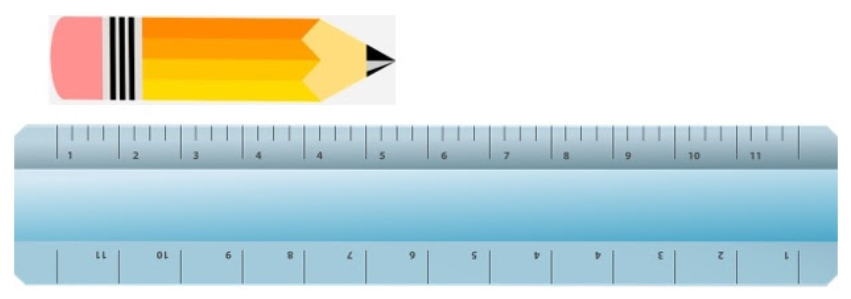

What You Should Know - Laser Maze: Explore Lasers and Distance
 Important Vocabulary
Important Vocabulary
- Laser - a device that produces a very narrow beam of light
- Molecules - the smallest units of a substance that have the properties of the substance
- Line Plot - a chart with a number line showing each data point with a mark above
- Wavelength - in a wave it's the distance between two peaks
What Is a Laser?
A laser is a device that makes an intense beam of light in a single color. The word “laser” is an acronym that explains how a laser works: Light Amplification by the Stimulated Emission of Radiation = laser.

Albert Einstein was the first person to have the idea of a device we would later call a laser, and for many years after his first idea, scientists worked hard to see if they could make it work. It was not until 1959 that the name laser was coined by Gordon Gould in a research paper. The first working laser was built in 1960 and used a ruby crystal. The ruby laser was put together and operated by Theodore Maiman from Hughes Research Laboratories. There were so many people working on lasers at this time that there was a fight for the patent. The fight over the patent was not decided until 1987, when it was finally awarded to Gordon Gould.
How Does a Laser Work?
A laser uses special materials such as crystals, gases, or molecules to make light that is only one color. Usually, these materials are excited by an extremely bright light bulb like the flash from your camera. This causes the laser to send out a wave of light of one color that travels in a straight line. These waves are much like the waves of a ripple in a pond, but they are light instead of water. The waves of light are measured by looking at the distance between two peaks called the wavelength. Each color of light makes a differently sized wavelength. Red light has a longer wavelength than blue light. When a laser is working, every wave emitted from it is in sync with the others so that all the waves line up; this is called being in phase. When you shine a laser, the light does not easily spread out but instead stays in a straight beam, and lasers can travel long distances without the light spreading out because all the wavelengths are traveling together in phase.

Uses of Lasers, Classes, and Laser Safety
Lasers come in all shapes and sizes, and they are used for all different kinds of purposes depending on their strength and color. Lasers are made to cut through rocks or metal, and can help with delicate surgeries. Lasers are used for communication and for carrying TV and Internet signals.
Below is a chart that explains the classification of lasers. All lasers should have a label explaining what class of lasers they belong to so the people using them know the risks and safety precautions to take when operating them. It is very important that any time you are working with lasers you use caution and protect your eyes.

How to Measure
You can measure distances to the nearest whole, half, and fourth of an inch. Look at this ruler. Each mark is one fourth, or ¼ of an inch. This is also called the quarter-inch mark. The middle mark is halfway between the whole inches, so this mark is one half, or ½ of an inch.

To measure the pencil, first count the whole inches (5), then measure to the nearest mark (½). This line is about 5½ inches long.
Making a Line Plot
A line plot is a graph with one line. It shows the values under the line. Each object that has that value is shown as an X above the value. For example, these are the lengths of six pencils (in inches):
| Pencil 1 | Pencil 2 | Pencil 3 | Pencil 4 | Pencil 5 | Pencil 6 |
| 4¾ | 4 | 5½ | 4¼ | 5 | 4¼ |
To make a line plot of this data, place a mark for each one-fourth (quarter) inch between 4 inches and 6 inches on a horizontal line, like this:

Then, to make the line plot, place an X above each value to show the length of each pencil. There are six X’s total, one for each pencil. Notice that there are two X’s above the 4¼ mark because two pencils are 4¼ inches long.

Career Connection and Real-World Application
Physicist/Medical Professional
Physicists and medical professionals are two careers that work with lasers. Physicists and medical professionals understand the properties and behaviors of light, how light interacts with matter, and how different instruments and tools detect light. Physicists can use lasers to conduct experiments and to help invent new technology, and medical professionals can use lasers to perform life saving operations.
Illumination Engineer
Illumination engineers work with light in many different ways. There are illumination engineers that use light to create special effects in concerts and onstage. Others design light sources.
Optoelectronic
Optoelectronics is the study of devices or instruments that produce, detect, or control light. So people who have careers in this field may design and create these kinds of devices.

Construction
Construction workers measure a lot in their line of work. They must know how long to cut plywood, drywall, and posts. Sometimes they use measurements that are fractions. They must cut the products they are using to exact measurements so that the pieces fit perfectly together. They do not want their project to fall apart!
Another career that uses measurement is related to construction: window makers. They must cut glass to exact measurements, sometimes using fractions. No one wants a gap between the window and the sill. The glass must fit the space just right.